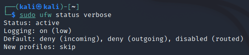
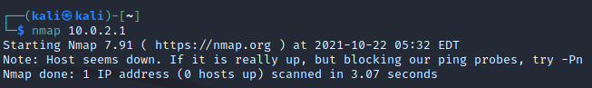
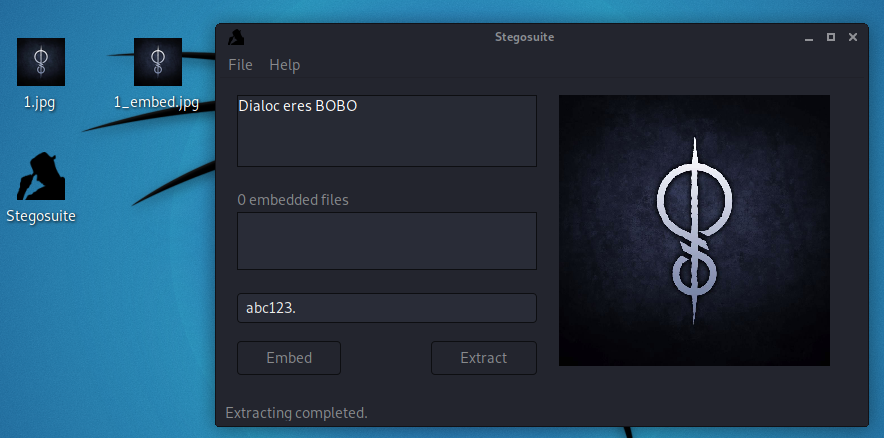

Repasando Kali y HTML
- Consigue que el ufw no permita señal con el exterior.

- Averigua los puertos que tiene abiertos tu router. Salida del terminal.

- Haz un manual de uso de un programa de esteganografía en HTML.
En la aplicación Stegousite, colocas la imagen que quieras. Escribes el texto que quieras esconder y pones una contraseña. Cuando le des a embed te aparecerá una imagen embed.
Si alguien quiere mirar el mensaje secreto tendrá que poner en la aplicación la imagen y al poner la contraseña.
